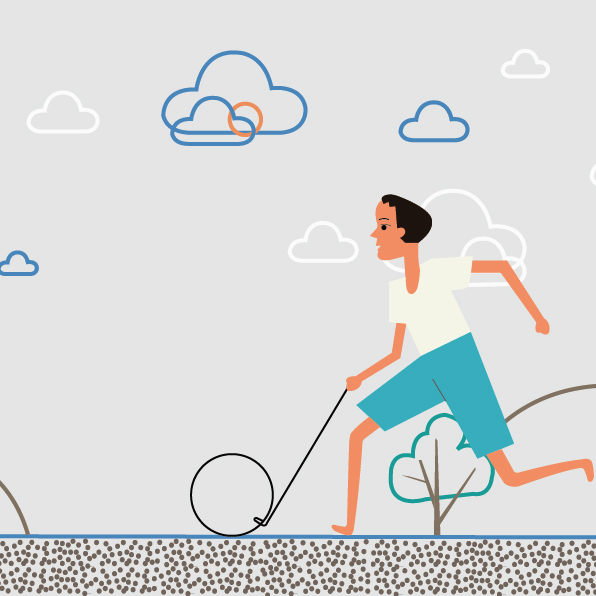
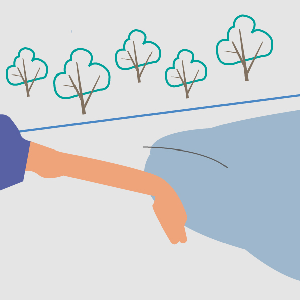
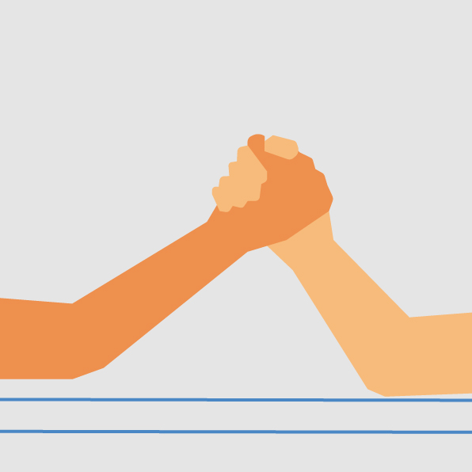
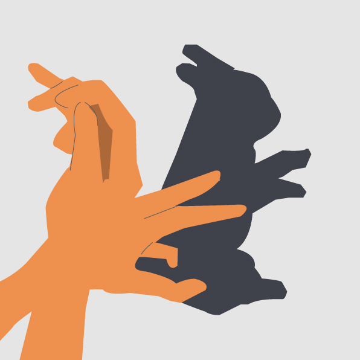
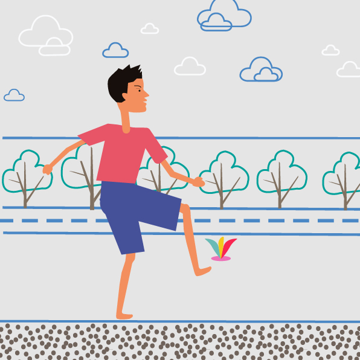
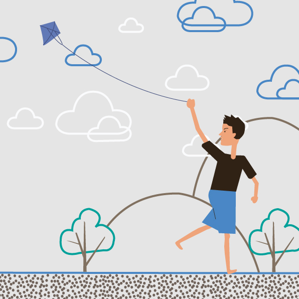
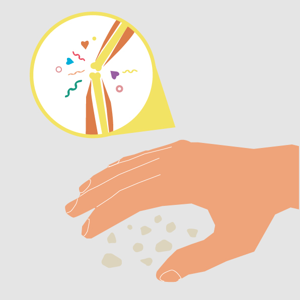
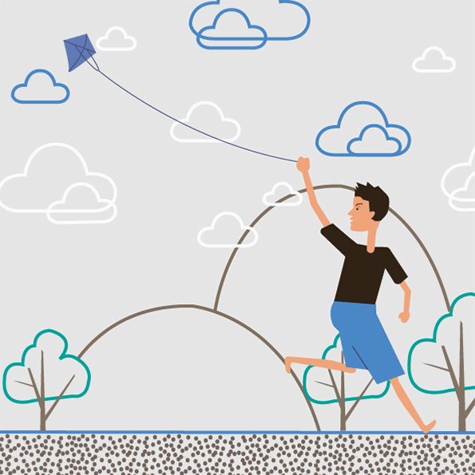

LOGO
目录
眼睛
嘴巴
手脚
大脑
耳朵








放风筝 风筝又称纸鸢、风鸢、纸鹞、鹞子，是由古代劳动人民发明于中国东周春秋时期，至今已2000多年。南北朝时，风筝开始成为传递信息的工具；从隋唐开始，由于造纸业的发达，民间开始用纸来裱糊风筝；到了宋代，放风筝成为人们喜爱的户外活动。放风筝的时候，一般是一抽一放。抽的时候，因为风筝提线一般放在风筝面靠上的位置，加大牵引力可以控制风筝角度变小，上扬力增加，风筝稳步上升；放的时候，即平衡的风筝牵引力变小，在风力和扬力的合力作用下，风筝会飞高飞远，但是必须很快又抽，以再次保持风筝的角度稳定。风力正盛的时候可以多放线，当风力稍有下降，就收一些线。春天放风筝，对人的身体健康是非常有益处的。传统中医认为，放风筝者沐浴和煦的阳光和春风，有“疏泄内热，增强体质之益。此外，放风筝能使人情绪开朗、心境愉悦。放飞时，大脑高度集中，无疑会消除人的内心杂念；放飞者极目蓝天，其心胸也会感到开阔；此外，春季草长莺飞，触目皆景，放飞风筝，是一次人与自然的美好对话。